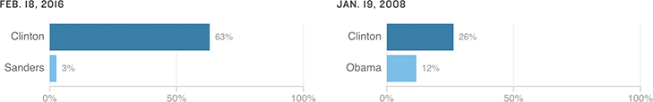

Clinton Holds Superdelegate Lead
An Associated Press survey of superdelegates has found that more have pledged their support for a candidate this season than at a similar point in the 2008 campaign (after the first primaries, but before Super Tuesday). Hillary Clinton commands even stronger superdelegate support this cycle.
